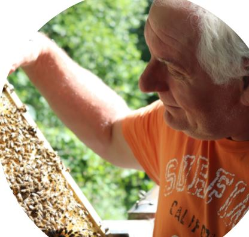

Vorstellung der Funktionäre:
Nachfolgend werden die Funktionäre des Imkerverein Schwanenstadt vorgestellt. Gerne werden Sie auf eure Anliegen eingehen.
| Image | Name | Funktion | Telefon Nr. | |
|---|---|---|---|---|
|
|
Hans-Peter Pfarl | Obmann | email: Hans-Peter Pfarl | +43 699 88779433 |
| Pucher Michael Mitterweg 8 4690 Oberndorf |
1.Obmann-StV. | email: Pucher Michael | +43 681 81413053 | |
|
|
Franz Imlinger | 2.Obmann-StV. | email: Franz Imlinger | +43 699 17302483 |
 |
Josef Zankl | Schriftführer | email: Josef Zankl | +43 676 5979161 |
| Dieter Kropfreiter | Schriftführe-StV. | email: Dieter Kropfreiter | +43 664 6702568 | |
 |
Alois Holl | Kassier | +43 7673 7103 | |
|  | Günter Koller | Kassier-StV | email: Günther Koller | +43 664 8859 8658 |
|
|
Johann Ennser | Kontrolle | +43 688 812 1611 | |
| Erich Kropfreiter | Kontrolle | +43 7673 3769 | ||
| Udo Zauner | Gesundheitswart | email: Udo Zauner | +43 664 7365 3314 | |
|
|
Robert Bittermann | Beirat | email: Robert Bittermann | +43 664 835 2402 |
Der Imkerverein Schwanenstadt und Umgebung gehört mit einem Alter von 137 Jahren zu den ältesten Imkervereinen in Österreich. Nachfolgender Link ermöglicht einen geschichtlichen Überblick und eine Abschrift der Vereinsgründung.
Gründerversammlung 1895
Vorwort zum 3.Protokollbuch